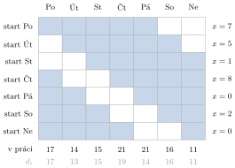
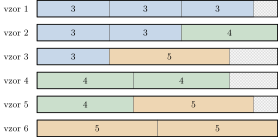
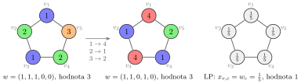
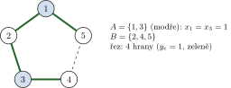
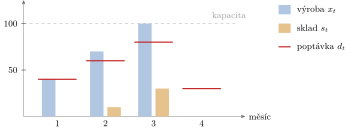

15.9 Cvičení 8: Modelování v ILP¶
Všechna řešení mají stejnou kostru, jakou chce úloha 3 zápočtového testu („Formulace jako ILP“, 6 bodů): proměnné s významem, omezení po skupinách s tím, co zajišťují, účelová funkce, velikost programu a zdůvodnění, proč optimum ILP je optimum úlohy. Kostru shrnuje následující rámeček; vzorové řešení úlohy z ukázkového testu (rozvrh zkoušek) je v příloze C.
Postup na papíře: formulace jako ILP
- Proměnné. Ke každé proměnné napiš obor (\(\{0,1\}\), \(\mathbb Z_{\ge0}\), reálná) a význam větou („\(x_{v,c}=1\) právě když vrchol \(v\) dostane barvu \(c\)“), včetně rozsahu indexů. Začni otázkou „co vlastně volíme?“; pomocné proměnné (použitá barva, otevřený sklad, maximum \(t\)) přidej, až když je potřebuje omezení nebo účel.
- Omezení po skupinách. Očísluj skupiny (O1), (O2), …; u každé napiš kvantifikátor („pro každou hranu \(\{u,v\}\in E\) a každou barvu \(c\)“) a jednu větu, co skupina zajišťuje. Projdi zadání větu po větě a ke každé podmínce najdi skupinu, která ji vyjadřuje.
- Účelová funkce. Směr (min / max) a lineární výraz. Je-li cílem „nejmenší počet“ něčeho, co zatím proměnnou není (použité barvy, termíny), potřebuješ pomocnou proměnnou a vazbu (trik \(x\le y\)).
- Velikost. Počet proměnných a omezení jako funkce parametrů vstupu (\(|V|\), \(|E|\), \(m\), …), ne jen \(\mathcal O(\cdot)\). U konkrétních dat i čísla.
- Proč optimum ILP = optimum úlohy. Dva směry: (a) každé řešení úlohy dá přípustné řešení ILP se stejnou hodnotou; (b) každé přípustné řešení ILP dá řešení úlohy s hodnotou aspoň tak dobrou. U konkrétních dat uveď optimum a zdůvodni ho (řešení + mez).
Kontrola na závěr: všechny výrazy lineární (žádné \(x\cdot y\), \(|\cdot|\), \(\max\), \(\ne\)), obory u všech proměnných, kvantifikátory u všech skupin, na malé instanci jedno správné řešení projde a jedno nesmyslné ne.
Cvičení 8.1 (pošta)
Pošta potřebuje v \(i\)-tém dni týdne aspoň \(d_i\) zaměstnanců, kde \(i=1,\dots,7\). Každý zaměstnanec pracuje pět po sobě jdoucích dní a pak má dva dny volna; rozvrh se každý týden opakuje (např. kdo začíná v sobotu, pracuje od soboty do středy). Zapište jako ILP úlohu najít nejmenší počet zaměstnanců, se kterým lze požadavky splnit.
Příklad:
| den | Po | Út | St | Čt | Pá | So | Ne |
|---|---|---|---|---|---|---|---|
| \(d_i\) | 17 | 13 | 15 | 19 | 14 | 16 | 11 |
Řešení
Co volíme. Zaměstnanec je určen jen tím, kterým dnem začíná svých pět dní – zbytek rozvrhu je pak pevný. Proměnná „kolik lidí pracuje v den \(i\)“ by nestačila: nevynutí, že každý pracuje pět dní za sebou.
1. Proměnné. \(x_j\in\mathbb Z_{\ge0}\) pro \(j=1,\dots,7\) (Po, …, Ne) … počet zaměstnanců, kteří začínají pracovat v den \(j\) (a pracují dny \(j,j+1,\dots,j+4\) cyklicky).
2. Omezení.
- (O1) Pro každý den \(i=1,\dots,7\): \(\displaystyle x_i+x_{i-1}+x_{i-2}+x_{i-3}+x_{i-4}\ \ge\ d_i\) (indexy modulo 7, tj. \(x_0=x_7\), \(x_{-1}=x_6\), …). Zajišťuje, že v den \(i\) je v práci aspoň \(d_i\) lidí: v den \(i\) pracují přesně ti, kdo začali v den \(i\) nebo v některém ze čtyř dnů předtím.
Rozepsáno pro data (řádek = den, sčítají se začátky, které ho pokrývají):
3. Účel. \(\displaystyle\min\sum_{j=1}^{7}x_j\) – celkový počet zaměstnanců (každý má právě jeden den začátku).
4. Velikost. 7 celočíselných proměnných, 7 omezení (O1) a 7 podmínek nezápornosti. Obecně pro cyklus \(n\) dní: \(n\) proměnných a \(n\) omezení.
5. Proč optimum ILP = optimum úlohy. Rozvrh se \(N\) zaměstnanci dá vektor \(x\) (kolik jich začíná kdy) se součtem \(N\), a protože rozvrh pokrývá požadavky, splňuje (O1). Naopak z přípustného \(x\) postavíme rozvrh: \(x_j\) lidí začne v den \(j\); podle (O1) je každý den dost lidí a lidí je \(\sum_j x_j\). Hodnoty si odpovídají, optima jsou stejná.
Optimum pro data: 23 zaměstnanců.
- Řešení s 23: \(x=(x_{\text{Po}},\dots,x_{\text{Ne}})=(7,5,1,8,0,2,0)\). V práci je po dnech \((17,14,15,21,21,16,11)\) lidí, což pokrývá \(d=(17,13,15,19,14,16,11)\).
- Míň nejde (mez přes dualitu): sečtěme omezení pro Po, St, Čt a So. Vpravo je \(17+15+19+16=67\). Vlevo má každé \(x_j\) koeficient nejvýš 3 (začátek v Po pokrývá Po, St, Čt; začátek v Pá jen So a Po; ostatní po třech), takže \(3\sum_jx_j\ge67\), tj. \(\sum_jx_j\ge22\tfrac13\), a protože jde o celé číslo, \(\sum_jx_j\ge23\). Je to přesně postup z oddílu 15.4: duální řešení \(y=(\tfrac13,0,\tfrac13,\tfrac13,0,\tfrac13,0)\) dává mez \(22\tfrac13\) = optimum LP relaxace.
(Ověřeno skriptem: řešič dává 23; výčtem všech rozdělení 22 lidí do 7 dnů začátku žádné nevyhoví, 23 lidí lze rozdělit 383 způsoby.)

Řádek = den začátku, modře dny, kdy taková směna pracuje (cyklicky). Vpravo počty \(x_j\) optimálního řešení, dole kolik lidí je v práci a kolik je potřeba.
Typické chyby (8.1)
- Proměnné „počet lidí v den \(i\)“ – model pak nezná pětidenní bloky.
- Zapomenutý přechod přes konec týdne: zaměstnanec, který začne v pátek, pracuje i v pondělí a úterý.
- \(x_j\in\{0,1\}\) místo \(x_j\in\mathbb Z_{\ge0}\) – v jeden den může začínat víc lidí.
Cvičení 8.2 (řezání tyčí)
Pila dostává tyče délky 10 m a má z nich nařezat aspoň \(d_3\) kusů délky 3 m, \(d_4\) kusů délky 4 m a \(d_5\) kusů délky 5 m. Zapište jako ILP úlohu, jak požadavky splnit za použití co nejmenšího počtu tyčí.
Řešení
Co volíme. U každé tyče rozhodujeme, jak ji rozřežeme. Možností je málo, takže je vypíšeme: vzor (pattern) je trojice \((a_3,a_4,a_5)\) počtů kusů s \(3a_3+4a_4+5a_5\le10\). Stačí maximální vzory, do kterých se už žádný kus nevejde (zbytek je odpad):
| vzor \(p\) | 1 | 2 | 3 | 4 | 5 | 6 |
|---|---|---|---|---|---|---|
| \((a_{3p},a_{4p},a_{5p})\) | \((3,0,0)\) | \((2,1,0)\) | \((1,0,1)\) | \((0,2,0)\) | \((0,1,1)\) | \((0,0,2)\) |
| využito [m] | 9 | 10 | 8 | 8 | 9 | 10 |
1. Proměnné. \(z_p\in\mathbb Z_{\ge0}\) pro \(p=1,\dots,6\) … kolik tyčí rozřežeme podle vzoru \(p\).
2. Omezení.
- (O1) Pro každou délku \(\ell\in\{3,4,5\}\): \(\displaystyle\sum_{p=1}^{6}a_{\ell p}\,z_p\ge d_\ell\). Zajišťuje, že kusů délky \(\ell\) je nařezáno aspoň \(d_\ell\). Konkrétně \(3z_1+2z_2+z_3\ge d_3\), \(z_2+2z_4+z_5\ge d_4\), \(z_3+z_5+2z_6\ge d_5\).
Že se vzor do tyče vejde, je zajištěno už výběrem vzorů, žádné další omezení není potřeba.
3. Účel. \(\displaystyle\min\sum_{p=1}^{6}z_p\) – počet použitých tyčí.
4. Velikost. 6 proměnných a 3 omezení – nezávisle na \(d_3,d_4,d_5\), ta jsou jen na pravých stranách.
5. Proč optimum ILP = optimum úlohy. Každé rozřezání \(N\) tyčí určuje u každé tyče vzor; nemaximální vzor nahradíme maximálním, který ho obsahuje (kusů neubude, omezení „aspoň“ zůstanou splněna) – dostaneme přípustné \(z\) se součtem \(N\). Naopak přípustné \(z\) říká, jak rozřezat \(\sum_pz_p\) tyčí, a (O1) zaručuje dost kusů. Přebytečné kusy zadání dovoluje („aspoň“).
Druhá možnost: přiřazovací model. Očíslujeme tyče \(j=1,\dots,U\), kde \(U=d_3+d_4+d_5\) (každý kus na vlastní tyči stačí vždy). Proměnné \(y_j\in\{0,1\}\) … tyč \(j\) je použitá, \(u_{\ell j}\in\mathbb Z_{\ge0}\) … kolik kusů délky \(\ell\) uřízneme z tyče \(j\). Omezení \(3u_{3j}+4u_{4j}+5u_{5j}\le10\,y_j\) pro každé \(j\) (do tyče se kusy vejdou a řeže se jen z použité tyče – kapacita s aktivací z oddílu 15.2) a \(\sum_ju_{\ell j}\ge d_\ell\) pro každé \(\ell\); účel \(\min\sum_jy_j\). Velikost: \(4U\) proměnných a \(U+3\) omezení – roste s počty kusů. Je správný, ale pro řešič horší: LP relaxace „použije“ tyč jen zčásti (\(y_j\) = zaplněná délka / 10) a tyče jsou zaměnitelné, takže stejné řešení má mnoho přečíslovaných kopií.
Příklad s vlastními čísly. Zadání čísla nedává; zvolme \(d_3=5\), \(d_4=3\), \(d_5=4\). Optimum je 5 tyčí: třikrát vzor \((2,1,0)\) (dá 6 kusů po 3 m a 3 kusy po 4 m) a dvakrát vzor \((0,0,2)\) (4 kusy po 5 m). Míň nejde, protože kusy mají dohromady \(5\cdot3+3\cdot4+4\cdot5=47\) m a čtyři tyče jen 40 m. (Ověřeno skriptem: vzorový model, přiřazovací model i přímé dynamické programování přes zbývající počty dávají 5; vzorový a dynamický výpočet se shodují i na 150 náhodných zadáních.)

Šest maximálních vzorů řezání tyče délky 10 m; šrafovaně odpad.
Cvičení 8.3 (chromatické číslo)
Zapište jako ILP úlohu najít chromatické číslo \(\chi(G)\) grafu \(G=(V,E)\), tedy nejmenší počet barev, kterými lze obarvit vrcholy tak, aby žádná hrana nespojovala dva vrcholy stejné barvy. Proč je takový model pro řešič nepraktický? Jak ho vylepšit?
Řešení
Rozšíříme redukci \(\href{../ch-zoo/ch-zoo-3-coloring.html#prob-3col}{\class{woo-pk-prob-3col}{\prob{3-Coloring}}}\mathrel{\href{../ch-redukce/ch-redukce-jak-porovnat-slozitost-dvou-problemu.html#def-redukce}{\class{woo-pk-def-redukce}{\redp}}}\href{../ch-cisla/ch-cisla-ilp.html#prob-ilp}{\class{woo-pk-prob-ilp}{\prob{ILP}}}\) z kapitoly 11 (rámeček Redukce: 3-Coloring ≤ₚ ILP): počet barev už není pevný, ale minimalizujeme ho. Označme \(n=|V|\); \(n\) barev stačí vždy, barvy jsou \(c=1,\dots,n\).
1. Proměnné.
- \(x_{v,c}\in\{0,1\}\) pro \(v\in V\), \(c=1,\dots,n\) … vrchol \(v\) má barvu \(c\);
- \(w_c\in\{0,1\}\) pro \(c=1,\dots,n\) … barva \(c\) je použitá.
2. Omezení.
- (O1) \(\sum_{c=1}^{n}x_{v,c}=1\) pro každý \(v\in V\) – každý vrchol má právě jednu barvu.
- (O2) \(x_{u,c}+x_{v,c}\le1\) pro každou hranu \(\{u,v\}\in E\) a každou barvu \(c\) – konce hrany nemají stejnou barvu.
- (O3) \(x_{v,c}\le w_c\) pro každý \(v\in V\) a každou barvu \(c\) – barvu, kterou má nějaký vrchol, musíme započítat (implikace \(x_{v,c}\Rightarrow w_c\)).
3. Účel. \(\displaystyle\min\sum_{c=1}^{n}w_c\) – počet použitých barev.
4. Velikost. \(n^2+n\) binárních proměnných; \(n+n|E|+n^2\) omezení.
5. Proč optimum ILP = \(\chi(G)\). Obarvení \(k\) barvami (očíslujme je \(1,\dots,k\)) dá přípustné řešení s \(w_1=\dots=w_k=1\), ostatní 0, hodnota \(k\). Naopak z přípustného řešení vezmeme za barvu \(v\) to \(c\), pro které \(x_{v,c}=1\) (O1); podle (O2) je obarvení vlastní a podle (O3) použije jen barvy s \(w_c=1\), tedy nejvýš \(\sum_cw_c\) barev. Minimum ILP je proto přesně \(\chi(G)\).
Varianta s min-max (oddíl 15.2): místo \(w_c\) jedna proměnná \(t\), omezení \(t\ge\sum_c c\cdot x_{v,c}\) pro každé \(v\) („\(t\) je aspoň číslo barvy každého vrcholu“) a účel \(\min t\). Optimální obarvení lze vždy přečíslovat na barvy \(1,\dots,\chi(G)\), takže optimum je opět \(\chi(G)\).
Proč je model nepraktický.
- Symetrie. Barvy jsou zaměnitelné: z každého řešení vznikne permutací barev další se stejnou hodnotou, až \(n!\) kopií. Branch & bound je prochází všechny – větvení „\(x_{v,c}=0\)“ jen přesune \(v\) do jiné barvy a mez se nezmění.
- Slabá LP relaxace. \(x_{v,c}=w_c=\tfrac1n\) pro všechna \(v,c\) splňuje (O1)–(O3) a má hodnotu 1. LP mez je tedy 1 pro každý graf – i pro \(K_n\) s \(\chi=n\). Řešič skoro nic neprořízne.
- Velikost. \(n^2\) proměnných i tehdy, když stačí tři barvy.

Kružnice \(C_5\) s \(n=5\) barvami (\(\chi(C_5)=3\), v kroužku číslo barvy). Vlevo a uprostřed dvě různá optimální řešení ILP, která se liší jen přečíslováním barev. Celkem má ILP 300 optimálních řešení, ale jen 5 různých rozdělení vrcholů do tří barevných tříd – každé v \(5\cdot4\cdot3=60\) kopiích. Vpravo zlomkové řešení LP relaxace ((O1) \(5\cdot\frac15=1\), (O2) \(\frac15+\frac15\le1\), (O3) \(\frac15\le\frac15\)) s hodnotou \(\sum_cw_c=1\). (Počty ověřeny výčtem.)
Jak ho vylepšit.
- Silnější formulace. Sloučit (O2) a (O3) do \(x_{u,c}+x_{v,c}\le w_c\) pro hrany ((O3) ponechat jen pro izolované vrcholy). Celočíselná řešení se nezmění, ale LP mez vzroste z 1 na 2 pro každý graf s hranou. Dále klikové nerovnice \(\sum_{v\in K}x_{v,c}\le w_c\) pro kliky \(K\) (obdoba trojúhelníků u VC v oddíle 15.5): sečtením přes \(c\) dají LP mez aspoň \(|K|\). Lze je přidávat jako řezy.
- Méně barev. Místo \(n\) barev jen tolik, kolik dá rychlá heuristika ((nad rámec přednášky) např. hladové barvení, které použije nejvýš \(\Delta+1\) barev).
- Rozbití symetrie (nad rámec přednášky): \(w_c\ge w_{c+1}\) (barvy se používají od první), vrcholům jedné kliky pevně přidělit barvy \(1,2,\dots\).
- Jiný model (nad rámec přednášky): proměnná \(\lambda_S\in\{0,1\}\) pro každou nezávislou množinu \(S\), omezení \(\sum_{S\ni v}\lambda_S\ge1\) pro každý vrchol, účel \(\min\sum_S\lambda_S\). Nemá symetrii barev a má silnější relaxaci (na \(C_5\) dá 2,5 místo 2); nezávislých množin je ale exponenciálně mnoho, řeší se generováním sloupců jako crew pairing (oddíl 15.8).
(Ověřeno skriptem na 150 náhodných grafech do 6 vrcholů: základní model, sloučená varianta, varianta s \(w_c\ge w_{c+1}\), min-max varianta i model nezávislých množin dávají \(\chi(G)\) spočítané hrubou silou; LP mez základního modelu vyšla vždy 1, sloučené varianty vždy 2.)
Cvičení 8.4 (Max-Cut a nejmenší řez)
Zapište jako ILP problém \(\href{../ch-zoo/ch-zoo-maxcut.html#prob-maxcut}{\class{woo-pk-prob-maxcut}{\prob{Max-Cut}}}\): pro graf \(G=(V,E)\) najděte rozdělení vrcholů \(V=A\cup B\) na dvě disjunktní části, které maximalizuje počet hran mezi \(A\) a \(B\). Jak by se model změnil, kdybychom naopak hledali nejmenší řez s neprázdnými částmi \(A\) i \(B\)?
Řešení
Problém známe z kapitoly 9 (definice 9.10, tam v rozhodovací verzi). Označme \(n=|V|\), \(m=|E|\).
1. Proměnné.
- \(x_v\in\{0,1\}\) pro \(v\in V\) … \(x_v=1\) právě když \(v\in A\) (jinak \(v\in B\));
- \(y_e\in\{0,1\}\) pro \(e\in E\) … hrana \(e\) se započítá do řezu.
2. Omezení. Pro každou hranu \(e=\{u,v\}\in E\):
- (O1) \(y_e\le x_u+x_v\) – jsou-li oba konce v \(B\), hrana se nezapočítá;
- (O2) \(y_e\le 2-x_u-x_v\) – jsou-li oba konce v \(A\), hrana se nezapočítá.
Dohromady: \(y_e=1\) jen u hran, jejichž konce jsou v různých částech (XOR z oddílu 15.2).
3. Účel. \(\displaystyle\max\sum_{e\in E}y_e\).
4. Velikost. \(n+m\) binárních proměnných, \(2m\) omezení.
5. Proč optimum ILP = velikost největšího řezu. Pro pevné \(x\) smí být \(y_e=1\) právě u hran mezi \(A\) a \(B\), takže hodnota každého přípustného řešení je nejvýš velikost řezu \((A,B)\); maximalizace nastaví \(y_e=1\) u všech takových hran a hodnota je přesně velikost řezu. Maximum přes \(x\) je tedy největší řez. Dolní meze na \(y_e\) nejsou potřeba: maximalizace sama tlačí \(y_e\) nahoru.
Nejmenší řez s neprázdnými částmi. Změní se tři věci:
- Směr účelu: \(\min\sum_ey_e\). Teď řešič tlačí \(y_e\) dolů, takže potřebujeme dolní meze – (O1') \(y_e\ge x_u-x_v\) a (O2') \(y_e\ge x_v-x_u\) pro každou hranu, tedy \(y_e\ge|x_u-x_v|\) (trik s absolutní hodnotou). Hrana mezi částmi pak musí mít \(y_e=1\). (O1), (O2) jsou zbytečné (minimalizace sama nastaví \(y_e=0\) u hran uvnitř části).
- Neprázdnost: (O3) \(\sum_vx_v\ge1\) (\(A\neq\emptyset\)) a (O4) \(\sum_vx_v\le n-1\) (\(B\neq\emptyset\)). Bez nich je optimum triviálně 0: všechny vrcholy do jedné části.
- Velikost: \(n+m\) proměnných, \(2m+2\) omezení.
(nad rámec přednášky) Na rozdíl od Max-Cut (NP-těžký) je nejmenší řez polynomiální – lze ho spočítat přes toky v sítích. ILP model je správný, ale zbytečně silná zbraň.

Max-Cut na kružnici \(C_5\): optimum je 4 (všech 5 hran přeříznout nejde, kružnice je lichá). Nejmenší řez s neprázdnými částmi má na \(C_5\) hodnotu 2.
(Ověřeno skriptem na 150 náhodných grafech do 6 vrcholů: optimum obou ILP (řešičem a u menších grafů i výčtem všech binárních \((x,y)\)) se shoduje s výčtem všech rozdělení \(V=A\cup B\).)
Typické chyby (8.4)
- \(y_e=|x_u-x_v|\) nebo \(y_e=x_u\oplus x_v\) zapsané přímo – není to lineární.
- Při minimalizaci ponechat jen horní meze (O1), (O2): řešič nastaví všechna \(y_e=0\) a „nejmenší řez“ vyjde 0.
- Zapomenout na neprázdnost \(A\) a \(B\) u nejmenšího řezu.
Cvičení 8.5 (plánování výroby)
Továrna plánuje výrobu na \(m\) měsíců dopředu. V měsíci \(t=1,\dots,m\) musí dodat \(d_t\) kusů výrobku, za měsíc vyrobí nejvýše 100 kusů. Výrobky lze skladovat do dalších měsíců, uskladnění jednoho kusu stojí 20 Kč za každý měsíc. Pokud se v daném měsíci vyrábí, je nutné nejprve seřídit linku, což stojí 3 000 Kč (bez ohledu na vyrobené množství). Na začátku je sklad prázdný. Zapište jako ILP úlohu najít výrobní plán s nejmenšími náklady.
Příklad (\(m=4\)):
| měsíc \(t\) | 1 | 2 | 3 | 4 |
|---|---|---|---|---|
| \(d_t\) | 40 | 60 | 80 | 30 |
Řešení
Interpretace skladného. Zadání neříká přesně, kdy se skladné počítá. Bereme nejpřirozenější čtení: platí se 20 Kč za každý kus, který na konci měsíce zůstane na skladě (přechází do dalšího měsíce). Kus vyrobený a dodaný v témž měsíci skladné neplatí.
1. Proměnné. Pro \(t=1,\dots,m\):
- \(x_t\in\mathbb Z_{\ge0}\) … počet kusů vyrobených v měsíci \(t\);
- \(s_t\in\mathbb Z_{\ge0}\) … počet kusů na skladě na konci měsíce \(t\) (konstanta \(s_0=0\), sklad je na začátku prázdný);
- \(y_t\in\{0,1\}\) … v měsíci \(t\) se seřizuje linka (vyrábí se).
2. Omezení. Pro každé \(t=1,\dots,m\):
- (O1) \(s_{t-1}+x_t=d_t+s_t\) – bilance skladu: co bylo na skladě plus co se vyrobí, se buď dodá, nebo zůstane na skladě. Spolu s \(s_t\ge0\) zajišťuje, že poptávka \(d_t\) je splněna včas (nic se nedodává pozdě).
- (O2) \(x_t\le100\,y_t\) – vyrábět se smí jen po seřízení, a pak nejvýš 100 kusů (vypínač z oddílu 15.2 s \(M=100\), které je zároveň kapacitou).
3. Účel. \(\displaystyle\min\sum_{t=1}^{m}\bigl(3000\,y_t+20\,s_t\bigr)\) – seřízení plus skladné.
4. Velikost. \(3m\) proměnných (\(2m\) celočíselných, \(m\) binárních), \(2m\) omezení (plus nezápornost). Pro příklad 12 proměnných a 8 omezení.
5. Proč optimum ILP = nejlevnější plán. Plán výroby \(x\), který dodá včas, určí přes (O1) stavy skladu \(s_t\ge0\); položíme \(y_t=1\) právě v měsících s \(x_t>0\) – (O2) platí díky kapacitě 100 a účel jsou přesně náklady plánu. Naopak přípustné řešení ILP je plán, který dodá včas a nepřekročí kapacitu; jeho náklady jsou nejvýš hodnota účelu (ILP smí zaplatit seřízení i v měsíci bez výroby, \(y_t=1\), \(x_t=0\), ale to je jen dražší). Optima se tedy rovnají.
Optimum pro příklad: 9 800 Kč. Plán \(x=(40,70,100,0)\), sklad \(s=(0,10,30,0)\), seřizuje se v měsících 1, 2, 3: \(3\cdot3000+20\cdot(0+10+30+0)=9000+800=9800\).
- Aspoň 3 seřízení: poptávka je \(40+60+80+30=210>2\cdot100\).
- 4 seřízení stojí už 12 000 Kč.
Přesně 3 seřízení, vyrábět se musí v měsíci 1 (\(d_1=40\), sklad prázdný); vynecháme jeden z měsíců 2, 3, 4:
- bez měsíce 2: v měsíci 1 se musí vyrobit aspoň \(40+60=100\), tedy \(s_1\ge60\), skladné \(\ge1200\), celkem \(\ge10\,200\);
- bez měsíce 3: \(s_2\ge80\) a \(x_1+x_2\ge180\) dá \(x_1\ge80\), \(s_1\ge40\), skladné \(\ge20\cdot120=2400\), celkem \(\ge11\,400\);
- bez měsíce 4: \(s_3\ge30\); měsíc 3 vyrobí nejvýš 100 z potřebných \(80+30=110\), takže \(s_2\ge10\), skladné \(\ge20\cdot40=800\), celkem \(\ge9800\) – a to plán výše dosahuje.
(Ověřeno skriptem: řešič na ILP i dynamické programování přes stav skladu dávají 9 800; shodují se i na náhodných zadáních s \(m\le5\).)

Optimální plán: v měsíci 4 se nevyrábí, jeho poptávku pokryje sklad z měsíce 3 (a 10 kusů z měsíce 2).
Poznámka k síle formulace. LP relaxace má hodnotu jen 6 300 Kč: stačí \(y_t=x_t/100\) a seřízení se „rozpustí“ (oddíl 15.5). (nad rámec přednášky) Těsnější \(M_t=\min(100,\ d_t+\dots+d_m)\), tj. \(x_4\le30\,y_4\), zvedne mez na 7 100 Kč a celočíselná řešení nezmění.
Typické chyby (8.5)
- Jen \(x_t\ge d_t\) bez skladu – pak nejde vyrábět dopředu a model nezná skladné.
- Seřízení bez vazby na výrobu: \(3000\,y_t\) v účelu, ale chybí \(x_t\le100\,y_t\) – řešič nastaví všechna \(y_t=0\).
- Podmínka „\(y_t=1\), když \(x_t>0\)“ zapsaná nelineárně (\(y_t=\min(1,x_t)\), \(x_t\cdot(1-y_t)=0\)).
- Zapomenutá počáteční podmínka \(s_0=0\).